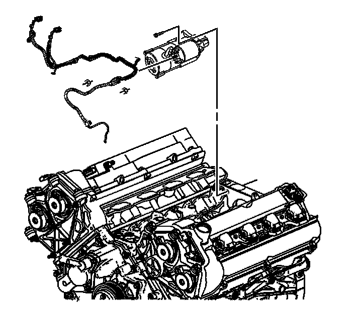
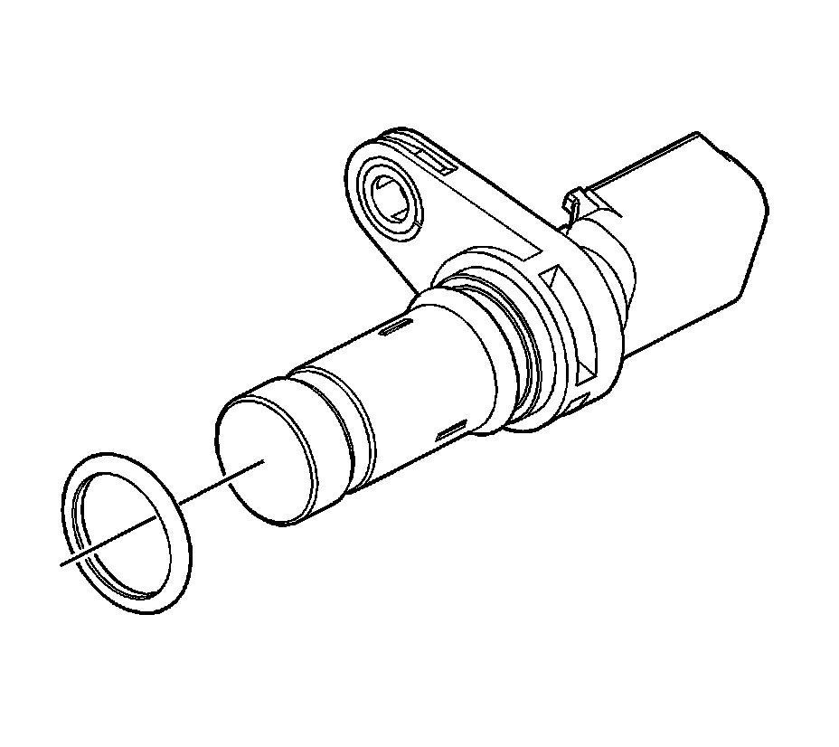
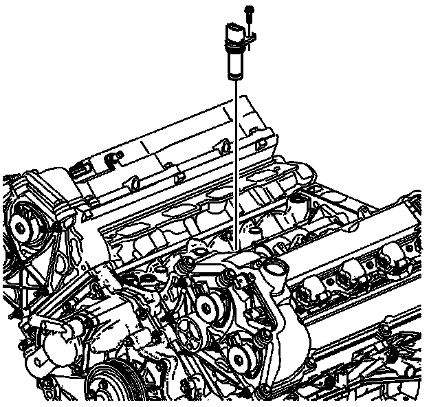
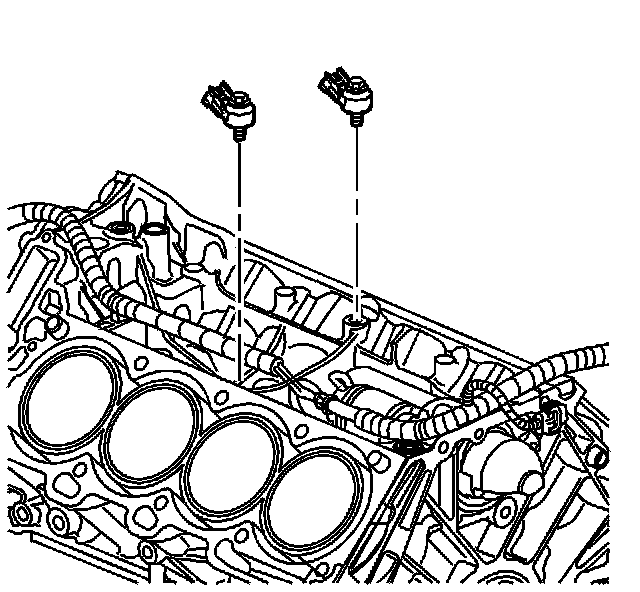
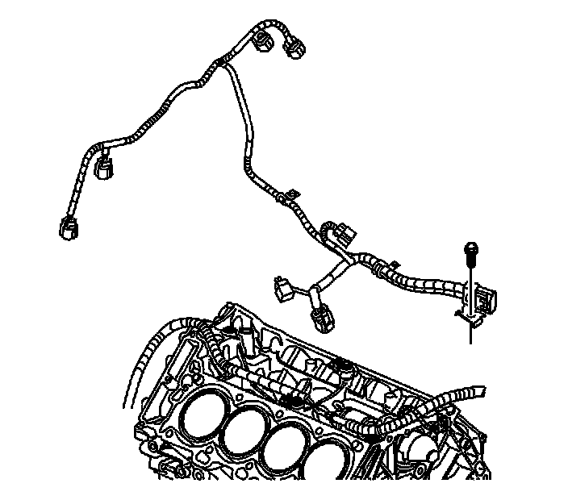
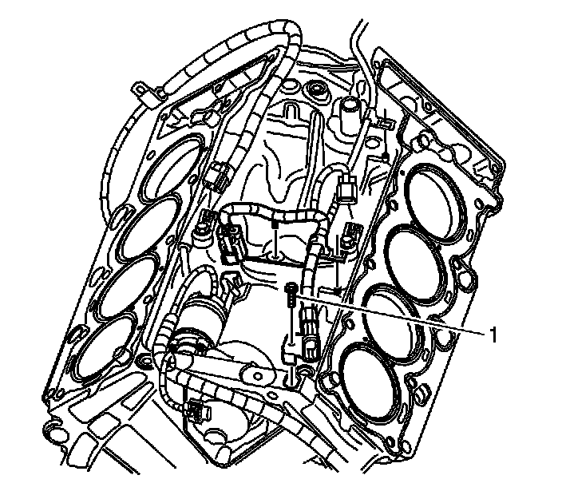
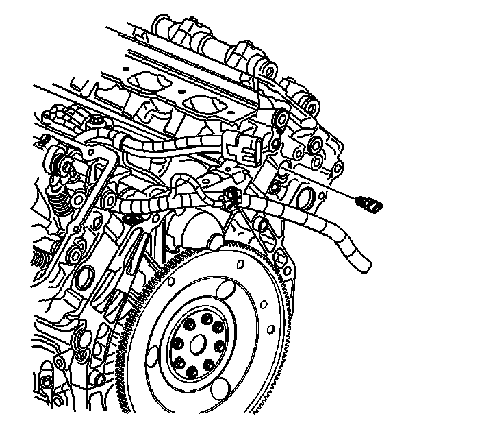

130. Starter Installation
Starter Installation
1. If installing a NEW starter motor, transfer the cables from the old starter motor.
2. Install the positive battery cable to the starter motor stud.
Notice: Refer to Fastener Notice (Fastener Notice) .
3. Install the starter motor stud nut.
Tighten the starter motor stud nut to 9.5 N.m (84 lb in).
4. Install the solenoid wiring harness to the starter solenoid stud.
5. Install the starter solenoid stud nut.
Tighten the starter solenoid stud nut to 3.4 N.m (30 lb in).

6. Position the starter motor in position.
7. Install the starter motor bolts.
Tighten the starter motor bolt to 30 N.m (22 lb ft).

8. Install a NEW O-ring on the crankshaft position sensor.

9. Install the crankshaft position sensor.
10. Install the crankshaft position sensor bolt.
Tighten the crankshaft position sensor bolt to 10 N.m (89 lb in).

11. Install the knock sensors.
12. Install the knock sensor bolts.
Tighten the knock sensor bolts to 10 N.m (89 lb in).

13. Install the knock and crankshaft position sensor wiring harness.
14. Connect the knock and crankshaft position sensor wiring harness brackets to the center, back and front of the block valley.

15. Install the knock and crankshaft position sensor wiring harness bolt (1).
Tighten the knock and crankshaft position sensor wiring harness bolt to 10 N.m (89 lb in).
16. Connect the knock and crankshaft position sensor wiring harness to the knock sensors and crankshaft position sensor.

17. Install the ECT sensor to the right cylinder head.
Tighten the ECT sensor to 20 N.m (15 lb ft).